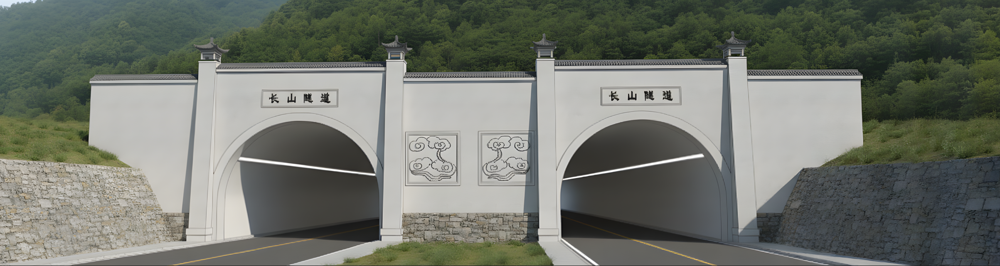
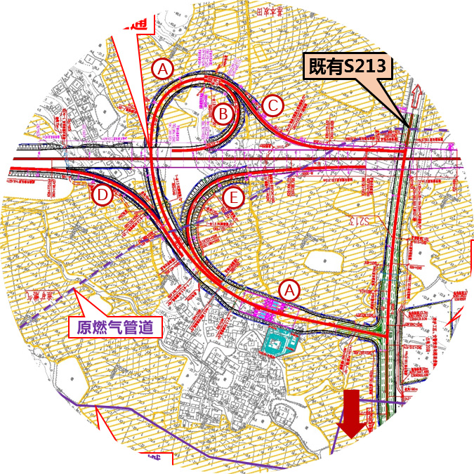

工程概况
PROJECT OVERVIEW
地理位置：和含高速二分部位于安徽省马鞍山市含山县境内，起于和县与含山县交界，终于长山林场，接在建S18宁合高速。
标段参数：桩号 K15+236 ~ K41+105，全长 25.869公里。
建设标准：双向六车道，设计时速 120km/h，路基宽34.5米。
合同造价 14.18亿元
计划工期 3年
显著特点：
路基占比高、预制任务重、土方调配难。工程体量大且结构形式多样。
控制性节点
一互通 (含山北) •
一服务区 (褒禅山) •
一隧道 (长山隧道)
路基全长 (占比91.1%)
23.57km
挖方 / 填方
226/
329万方
含改良土233.6万方
桥梁 (含互通主线)
11座
占比6.58%
桩基 / 墩柱
742/
426根
预制梁板 (任务重)
1205片
13m T梁/25m/35m箱梁
混凝土 / 钢筋
27万方
/
1.84万吨
其他构造物：全线涵洞及通道共185道（总长>7.4km），预制装配化率超80%。沥青路面铺装139.02万平米。
长山隧道

隧道1座（右线长579.352m、左线长615.879m）
进口里程 K40+532
进口里程 K40+532
含山北互通

互通主线为特大桥
K25+500 至 K27+025
K25+500 至 K27+025
褒禅山服务区

1处服务区 K29+300
占地 114亩
占地 114亩